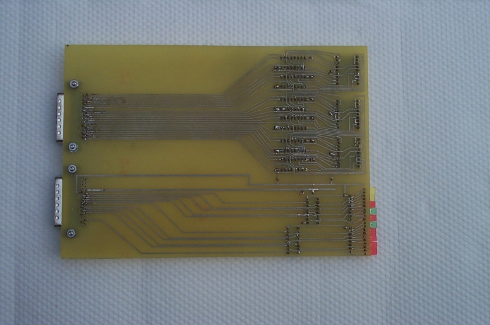

Debug Board
The debug board displays the state of the bus. This includes two 7-segment LED digits for the data pins, four digits for the address pins, and ten individual LEDs: four IRQs (interrupt request pins), memory read, memory write, I/O read, I/O write, reset, and NMI (non-maskable interrupt).

The design of the debug board is fairly straightforward. The individual LEDs are hooked up to the bus through inverters (since these lines are active-low) and through resistor packs. The data and address pins go through 4-bit-to-7-segment-LED chips (4495s).
We used the debug board extensively when building the memory and CPU boards. We didn't use it after that because we couldn't run the I/O board any slower than full speed and that prevented us from doing single-stepping of the Z-80 code.